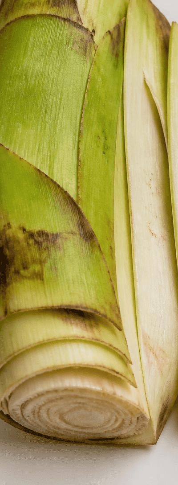
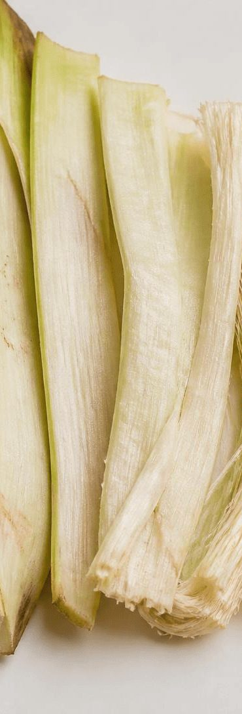
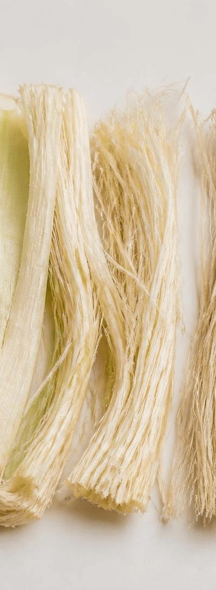
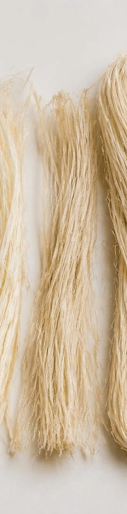
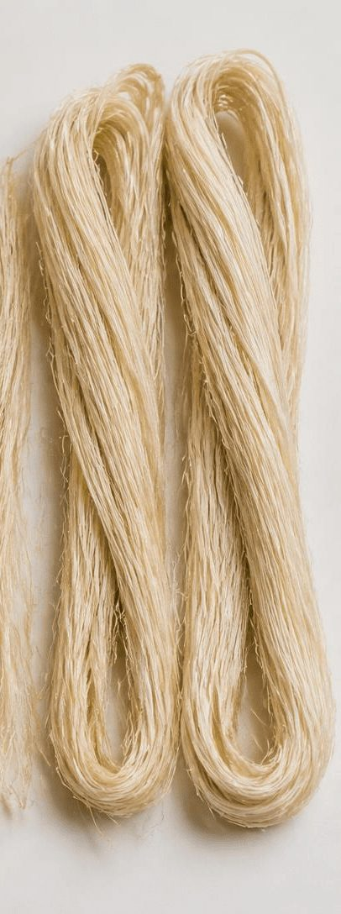

Home / Our Process
From banana plant residue to natural fibre.
A step-by-step view of how banana fibre manufacturing turns agricultural waste into a usable material.
Banana fibre manufacturing
Six stages, from stem to dispatch.
Banana fibre manufacturing converts the plant residue left after harvest into fibre ready for customers.

Banana plant residue sourcing
Banana plant residue left after the fruit harvest is identified and sourced.

Selection & preparation
Suitable plant material is selected and prepared for fibre extraction.

Fibre extraction
Fibre is separated from the prepared plant material.

Cleaning & processing
The extracted fibre is cleaned and processed into a usable form.

Drying & quality inspection
Fibre is dried and inspected before it is packed.
Packaging & dispatch
Finished fibre is packed and prepared for delivery to customers.
Images show banana plant material and fibre for illustration. They are not photographs of our factory machinery.

Why it matters
Agricultural waste utilization, step by step.
Each stage is aimed at one outcome: making dependable natural fibre from banana plant residue. Our focus is on sustainable manufacturing, careful handling and consistent quality.
Want to know more about our fibre or how it could fit your application?
Business enquiries